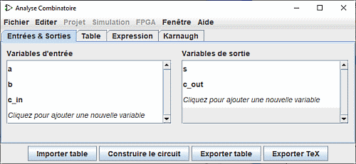
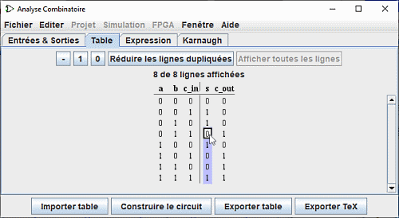

Editer la table de vérité
En ouvrant la fenêtre d'analyse combinatoire, vous verrez quatre onglets.
Ce document vous apporte de l'aide pour les deux premiers onglets: Entrées & Sortie et Table. Dans la suite du guide, vous trouverez une description des deux autres onglets: Expression et Karnaugh.
L'onglet entrées et sorties

L'onglet Entrées & Sortie vous permet d'afficher et éditer les listes des entrées et/ou des sorties et de préciser la largeur de leurs données.
Pour ajouter des éléments dans la liste, il suffit sélectionner la ligne avec Flèche Haut ou Flèche Bas ou de cliquer sur "Cliquez pour.." et d'introduire le nom désiré. La touche Retour a la ligne termine l'opération. Vous pouvez observer dans la figure ci-dessus la ligne "c_out" insérée dans la liste des sorties. Ensuite vous pouvez à l'aide de la souris définir la largeur de donnée de cette ligne (sur la droite). Les touches Enter ou Tab termineront la saisie.
Si vous voulez renommer une des lignes existantes, Effectuez un double click sur le texte vous permettra de le modifier
Pour supprimer une ligne, sélectionnez-la comme précédemment avec la souris ou les touches Flèche Haut ou Flèche Bas puis utilisez la touche Delete
Pour réorganiser l'ordre des lignes, sélectionnez-la comme précédemment, puis utilisez la combinaison Ctrl+Flèche Haut ou Ctrl+Flèche Bas pour la faire monter ou descendre dans la liste.
Toutes les actions impactent directement la présentation de la table de vérité.
L'onglet Table
Dans l'onglet Table, vous trouverez une série de boutons et la table de vérité. Celle-ci est organisée dans un ordre conventionnel, avec les entrées en colonnes à gauche et les sorties en colonnes à droite.

Il est possible de modifier les valeurs actuelles apparaissant dans les colonnes de sortie en cliquant sur la valeur qui vous intéresse et en utilisant les touches du clavier 0,1 et - (représentant une valeur indéterminée) ou en haut les boutons - , 1 , 0 . Après la saisie, le curseur descend d'une ligne dans la colonne.
Les touches Flèche Haut/bas ou Flèche Gauche/Droite permettent de de déplacer dans la sélection.
De la même manière vous pouvez modifier les données des colonnes d'entrée en y insérant des valeurs indéterminées (-) ou pour les supprimer et les remplacer par des 0 ou des 1. Comme nous le verrons à la page suivante, une valeur indéterminée permet l'élaboration des expressions minimales avec une certaine flexibilité.
Dans ce contexte, le bouton Réduire les lignes dupliquées permet de simplifier la représentation de la table et Afficher toutes les lignes de les présenter dans leur intégralité.
Vous pouvez copier-coller des valeurs en utilisant le presse-papiers. Le presse-papiers peut être transféré vers n'importe quelle application qui supporte du texte avec comme séparateurs le caratère tabulation.
Notez que votre expression sera modifiée de manière irrémédiable si vous éditez la table de vérité et vice versa.
Si la table de vérité est basée sur un circuit existant, vous pourriez voir des carrés rouge dans les colonnes des sorties avec "E" à l'intérieur. Ceci correspond à des erreurs durant le calcul des valeurs pour cette ligne. Soit le circuit semblait osciller, ou la sortie était une erreur elle-même (ce qui devrait être représenté par un câble rouge dans le circuit Logisim).
Les boutons Exporter table, Importer table
Les boutons Importer table et Exporter table permettent de sauvegarder et respectivement de recharger une définition de table de vérité a partir d'un fichier.
Suite: Créer des expressions.